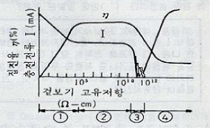
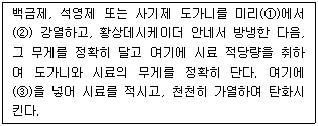

환경기능사 (2008-02-03 기출문제)
1과목: 대기오염방지
1. 다음 중 가장 낮은 농도는?
- 50 ng/mL
- 20 ㎍/100mL
- 0.5 ㎍/10mL
- 2 ng/50μL
(정답률: 54%)

2. 1시간에 7200m3이 발생되는 배기가스를 2m/s의 속도로 원형 송풍관을 통과시켜 전기집진장치로 보내려 할 때, 이원형 송풍관의 반지름(r)은 몇 cm로 해야 하는가?
- 42.8
- 48.6
- 56.4
- 59.7
(정답률: 43%)
3. 오염가스를 흡착하기 위하여 사용되는 흡착제와 가장 거리가 먼 것은?
- 활성탄
- 실리카켈
- 마그네시아
- 활성망간
(정답률: 55%)
4. 복사역전에 대한 다음 설명 중 틀린 것은?
- 복사역전은 공중에서 일어난다.
- 맑고 바람이 없는 날 아침에 해가 뜨기 직전에 강하게 형성된다.
- 복사역전이 형성될 경우 대기오염물질의 수직이동, 확산이 어렵게 된다.
- 해가 지면서부터 열복사에 의한 지표면의 냉각이 시작 되므로 복사역전이 형성된다.
(정답률: 72%)
5. sutton 의 확산방정식에서 굴뚝의 유효 굴뚝높이(He)와 오염물질의 최대 착지농도(Cmax)와의 관계를 바르게 나타낸 것은?
- Cmax ∝ He2
- Cmax ∝ He4
- Cmax ∝ He-2
- Cmax ∝ He-4
(정답률: 57%)
6. 집진율 99%로 운전되던 집진장치가 성능저하로 집진율이 97%로 떨어졌다. 집진장치 입구의 함진농도가 일정하다고 할 때 출구의 함진농도는 어떻게 변하겠는가?
- 3% 증가
- 3배 증가
- 2% 증가
- 2배 증가
(정답률: 57%)
7. 전기 집진장치에서 먼지의 고유저항과 집진율을 나타낸 다음 그림에서 ① - ④영역을 순서대로 바르게 연결한 것은?

- ① 재비산 - ② 정상 - ③ 스파크빈발 - ④ 역전리
- ①정상 - ② 스파크빈발 -③ 역전리 - ④ 재비산
- ① 스파빈발 - ② 역전리 - ③ 재비산 - ④ 정상
- ① 역전리 - ② 재비산 - ③ 정상 - ④ 스파크빈발
(정답률: 66%)
8. 황성분이 2%인 중유를 10t/h로 연소하는 보일러에서 발생하는 배출가스 중 SO2를 CaCO3로 완전 탈황하는 경우, 이론상 필요한 CaCO3의 양은?(단, 중유의 S는 모두 SO2로 배출되며, CaCO3 분자량:100)
- 약 0.9t/h
- 약 0.6t/h
- 약 0.3t/h
- 약 0.1t/h
(정답률: 49%)
9. 물리흡착과 화학흡착에 대한 비교 설명 중 옳은 것은?
- 물리적 흡착과정은 가역적이기 때문에 흡착제의 재생이나 오염가스의 회수에 매우 편리하다.
- 물리적 흡작은 온도의 영향에 구애받지 않는다.
- 물리적 흡작은 화학적 흡착보다 분자간의 인력이 강하기 때문에 흡착과정에서의 발열량도 크다.
- 물리적 흡착에서는 용질의 분자량이 적을수록 유리하게 흡착한다.
(정답률: 61%)
10. 30℃, 725mmHg 상태에서 CO2 44g이 차지하는 부피는?
- 24.4L
- 25.6L
- 26.1L
- 27.8L
(정답률: 40%)
11. 질소산화물의 발생을 억제하는 연소방법이 아닌 것은?
- 저과잉공기비 연소법
- 고온 연소법
- 2단 연소법
- 배기가스 재순환법
(정답률: 67%)
12. 전기 집진장치의 집진효율을 Deutsch-Anderson 식으로 구할 때 직접적으로 필요한 인자가 아닌 것은?
- 집진극 면적
- 입자의 이동속도
- 처리가스 량
- 입자의 점성력
(정답률: 60%)
13. 대기 중 암모니아 가스의 농도를 측정하였더니 22mg/Sm3이 었다. 이농도를 ppm 단위로 환산하면?(단, 암모니아의 분자량은 17임)
- 17ppm
- 22.4ppm
- 29ppm
- 33.2ppm
(정답률: 44%)
14. 다음 중 주로 광화학반응에 의하여 생성되는 물질은?
- CH4
- PAN
- NH3
- HC
(정답률: 80%)
15. 다음 중 오염물질의 농도표시가 아닌 것은?
- ppm
- mg/Sm3
- W/V%
- mmHg
(정답률: 66%)
2과목: 폐수처리
16. 회분식으로 일정한 양의 에너지와 영양분을 한번만 주고 미생물은 배양했을 때 미생물의 성장과정 순서 (초기 → 말기)대로 나타낸 것은?
- 대수 성장기 → 유도기 → 정지기 → 사열기
- 대수 성장기 → 정지기 → 유도기 → 사열기
- 유도기 → 대수 성장기 → 정지기 → 사열기
- 유도기 → 정지기 → 대수 성장기 → 사열기
(정답률: 70%)
17. 명반(alum)을 폐수에 첨가하여 응집처리를 할 때, 투입조에 약품 주입 후 응집조에서 완속교반을 행하는 주된 목적은?
- 명반이 잘 용해되도록 하기 위해
- floc과 공기와의 접촉을 원활히 하기 위해
- 형성되는 floc과 공기와의 가능한 한 뭉쳐 밀도를 키우기 위해
- 생성된 floc을 가능한 한 미립자로 하여 수량을 증가시키기 위해
(정답률: 63%)
18. 레이놀즈수의 관RP인자와 거리가 먼 것은?
- 입자의 지름
- 액체의 점도
- 액체의 비표면적
- 입자의 속도
(정답률: 58%)
19. 염소주입시 물속의 오염물을 산화시키고 처리수에 남아있는 염소의 양을 무엇이라 하는가?
- 잔류 염소량
- 염소 요구량
- 투입 염소량
- 파괴 염소량
(정답률: 81%)
20. 다음 중 물리적 예비처리공정으로 볼 수 없는 것은?
- 스크린
- 침사지
- 유량조정조
- 소화조
(정답률: 53%)
21. 시간당 225m3의 폐수를 유입하는 침전조가 있다. 웨어의 유효길이를 30m 하면 월류부하(m3/m·day)는?
- 50
- 100
- 180
- 200
(정답률: 56%)
22. 폐수처리에 사용되는 응집제로 적당하지 않은 것은?
- 황산일루미늄
- 석회
- 염화제 2철
- 차아염소산나트륨
(정답률: 54%)
23. 회전원판 접촉법과 가장 관계가 먼 것은?
- 호기성 처리
- 고밀도 폴리에틸렌
- 폭기기
- 생물학적 처리
(정답률: 41%)
24. 산업폐수에 관한 일반적인 설명으로 거리가 먼 것은?
- 주로 악성폐수가 많다.
- 중금속 등의 오염물질 함량이 생활하수에 비해 높다.
- 업종 및 생산방식에 따라 수질이 거의 일정하다.
- 같은 업종 일자리도 생산 규모에 따라 배수량이 달라진다.
(정답률: 81%)
25. 탈산소계수가 0.1/day 인 어떤 유기물질의 BOD5가 200ppm이었다. 2일 후에 남아 있는 BOD값은?(단, 상용내수 적용)
- 192.3 mg/L
- 189.4 mg/L
- 184.6 mg/L
- 179.3 mg/L
(정답률: 40%)
26. 수질오염공정시험방법상 따라 규정이 없는 한 감압 또는 진공의 기준으로 옳은 것은?
- 5 mmHg 이하
- 10 mmHg 이하
- 15 mmHg 이하
- 20 mmHg 이하
(정답률: 73%)
27. 폐수처리시설의 2차 침전지에서 팽화현상은 주로 어떤 결과를 초래하는가?
- 활성슬러지를 부패시킨다.
- 포기조 산기관능 막는다.
- 유출수의 SS농도가 높아진다.
- 포기조내의 이상난류를 발생시킨다.
(정답률: 63%)
28. 미생물의 생물학적 작용을 이용하여 하수 및 폐수를 자연전화시키는 공법으로, 라군(lagoon)이라고도 하며, 시설비와 운영비가 적게 드는 이점이 있기 때문에 소규모 마을의 오수처리에 먾이 이용되는 것은?
- 산화지법
- 소화조법
- 회전원판법
- 살수여상법
(정답률: 70%)
29. 다음 오염물질 함유폐수 중 알칼리 조건하에서 염소처리 (산화)가 필요한 것은?
- 시안(CN)
- 알루미늄(Al)
- 6가 크롬(Cr+6)
- 아연(Zn)
(정답률: 52%)
30. 다음 중 친온성 미생물의성장속도가 가장 빠른 온도 분포는?
- 10℃ 부근
- 15℃ 부근
- 20℃ 부근
- 35℃ 부근
(정답률: 59%)
31. 침전지에서 입자가 100% 제거되기 위해서 요구되는 침전 속도를 의미하는 것은?
- 침강 속도
- 침전 효율
- 표면 부하율
- 유입 속도
(정답률: 56%)
32. 폭 8m, 길이 28m, 높이가 3m 인 침전지에 유입 수량이 0.07m3 일 때 체류 시간은?
- 약 2시간 40분
- 약 2시간 50분
- 약 3시간 5분
- 약 3시간 28분
(정답률: 44%)
33. 수질관리를 위해 대장균군을 측정하는 주목적으로 가장 타당한 것은?
- 유기물질의 오염정도를 측정하기 위하여
- 수질의 미생물 성장가능 여부를 알기 위하여
- 공장폐수의 유입여부를 알리기 위하여
- 다른 수인성 병원균의 존재 가능성을 알기 위하여
(정답률: 67%)
34. 크롬의 환원에 사용되는 환원제가 아닌 것은?
- SO2
- Na2SO3
- FeSO4
- Al2SO4
(정답률: 42%)
35. 침사지의 수면적부하 1800m3/m2·day,수평유속 0.32m/sec, 유효수심 1.2m인 경우, 침사지의 유효길이는?
- 14.4m
- 16.4m
- 18.4m
- 20.4m
(정답률: 41%)
3과목: 폐기물처리
36. 함수율이 25%인 폐기물을 건조시켜 함수율 5%로 만들기 위해 폐기물 1톤당 증발시켜야 할 수분의 양은?
- 173.9kg
- 131.3kg
- 204.7kg
- 210.5kg
(정답률: 45%)
37. 폐기물 소각시설의 후연소실에 대한 설명으로 가장 거리가 먼 것은?
- 주연소실에서 생성된 휘발성 기체는 후연소실로 흘러들어 연소된다.
- 깨끗하고 가연성인 액상 폐기물은 바로 후연소실로 주입될 수 있다.
- 후연소실 내의 온도는 주연소실의 온도보다 보통 낮게 유지한다.
- 연기내의 가연성분의 완전산화를 위해 후연소실은 충분한 양의 잉여 공기가 공급되어야 한다.
(정답률: 64%)
38. A도시 쓰레기의 조성이 탄소 55%, 수소 10%,산소 30%,질소 3%,황 1%,회분 1%일 때, 고위발열령(kcal/kg)은?(단, HHV( kcal/kg)=81C+342.5(H-0/8)+22.5S 이다.)
- 약 4518
- 약 5318
- 약 6118
- 약 6618
(정답률: 34%)
39. 폐기물 수거노선을 결정할 때 고려 사항으로 거리가 먼 것은?
- 가능한 한 시계방향으로 수거노선을 정한다.
- 출발점은 차고지와 가깝게 한다.
- 수거인원 및 차량형식이 같은 기존 시스템의 조건들을 서로 관련시킨다.
- 쓰레기 발생량이 가장 많은 곳을 하루 중 가장 나중에 수거한다.
(정답률: 84%)
40. 슬러지 농축으로 얻는 장점이 아닌 것은?
- 후속 처리시설인 소화조의 부피를 감소시킬 수 있다.
- 소화조에서 미생물과 양분의 접촉을 차단시킬 수 있다.
- 슬러지 수송에 드는 비용을 절감할 수 있다.
- 슬러지 개량에 소요되는 약품비를 절약할 수 있다.
(정답률: 47%)
41. 탄소 75kg과 수소 15kg을 완전연소 시키는데 필요한 이론적인 산소의 양은?(단, 각각의 성분은 완전 연소하여 이산화탄소와 물로 됨)
- 180kg
- 240kg
- 280kg
- 320kg
(정답률: 28%)
42. 휘발유아 같이 끊는점이 낮은 기름의 연소는 주로 어떤 연소방식인가?
- 증발연소
- 분해연소
- 표면연소
- 자기연소
(정답률: 57%)
43. 다음 중 Optical Sorter(광학분류기)를 이용하기에 가장 적당한 것은?
- 종이와 플라스틱의 분리
- 색유리와 일반유리의 분리
- 딱딱한 물질과 물렁한 물질의 분리
- 유기물과 무기물의 분리
(정답률: 77%)
44. 분뇨 처리의 목적으로 가장 거리가 먼 것은?
- 슬러지의 균일화
- 생물학적으로 안정화
- 위생적으로 안전화
- 최종 생성물의 감량화
(정답률: 61%)
45. 슬러지 건조상에 관한 설명으로 틀린 것은?
- 설계를 위한 고려사항으로는 일기, 슬러지 질, 주거지역과의 거리, 지하토질의 투수성 등이다.
- 전형적인 구조는 두께가 20~40cm인 자갈로 된 층위에 깊이가 10~20cm인 모래 층이 위치하도록 한다.
- 2~6m의 간격으로 배수관이 설치되는데, 최소 직경은 10cm이며, 경사는 두지 않는다.
- 운전비용이 적게 들고 슬러지 성상에 크게 민감하지 않고. 생상된 케잌에 수분이 많지 않은 반면, 소유부지가 많다.
(정답률: 44%)
46. 매립지 차수시설에 대한 설명 중 가장 거리가 먼 것은?
- 차수시설은 매립이 시작되면 복구가 불가능하므로 차수막의 특성에 따라 완벽하게 설계 및 시공되어야 한다.
- 차수시설은 형태에 따라 매립지의 바닥 및 경사면의 차수를 위한 표면차수공과 매립지의 하류부 또는 주변부에 연직으로 설치하는 연직차수시설로 나뉜다.
- 점토에 벤토나이트 등을 첨가하면 차수성을 향상시킬 수 있다.
- 합성수지 및 고무계 차수막은 내화학성과 내구성이 높아 경사면 및 지반침하의 우려가 있는 곳에도 직접 시공할 수 있다.
(정답률: 53%)
47. 폐기물 파쇄기에 관한 다음 설명 중 틀린 것은?
- 전단파쇄기는 대개 고정칼, 회전칼과의 교합에 의하여 폐기물을 전단한다.
- 전단파쇄기는 충격파쇄기에 비하여 파쇄속도는 느리나, 이물질의 혼입에 대하여는 강하다.
- 전단파쇄기는 파쇄물의 크기는 고르게 할 수 있다.
- 전단파쇄기는 주로 목재류, 플라스틱류 및 종이류를 파쇄하는데 이용된다.
(정답률: 68%)
48. 다음은 폐기물의 강열감량 및 유기물함량 분석방법(기준)에 관한 설명이다. ( )안에 알맞은 것은?

- ① 600±25℃, ② 30분간, ③ 10% 황산은용액
- ① 900±25℃, ② 1시간, ③ 10% 황산은용액
- ① 600±25℃, ② 30분간, ③ 25% 질산암모늄용액
- ① 900±25℃, ② 1시간, ③ 25% 질산암모늄용액
(정답률: 54%)
49. 슬러지 혐기성 소화의 장점과 거리가 먼 것은?
- 병원균을 죽일수 있다.
- 슬러지 발생량을 감소시킬 수 있다.
- 메탄가스와 같은 가치있는 부산물을 얻을 수 있다.
- 호기성 소화에 비해 처리시간이 짧아 경제적이다.
(정답률: 51%)
50. 혐기성 소화조 운영 중 소화가스 발량생 저하 원인으로 가장 거리가 먼 것은?
- 유기물의 과부하
- 소화조내 온도저하
- 소화조내의 pH 상승(8.5 이상)
- 과다한 유기산생성
(정답률: 43%)
51. 폐기물부담금제도의 효과와 가장 거리가 먼 것은?
- 소비의 증대
- 폐기물 발생량 억제
- 자원의 낭비 방지
- 자원 재활용의 촉진
(정답률: 72%)
52. 폐기물이 발생되어 최종 처분되기까지 폐기물 관리에 관련되는 활동 중 작은 수거차량으로부터 큰 운송차량으로 폐기물을 옮겨 싣거나, 수거된 폐기물을 최종 처분장까지 장거리 수송하는 기능요소는?
- 발생
- 적환 및 운송
- 처리 및 회수
- 최종 처분
(정답률: 81%)
53. 현행 폐기물관리법령상 지정폐기물 중 부식성 폐기물의 폐산 (①)과 폐알칼리(②)의 판정기준은?(단, 액체상태의 폐기물이며, 기타조건은 제외)
- ① pH2.0 이하, ② pH 12.5이상
- ① pH3.0 이하, ② pH 12.5이상
- ① pH2.0 이하, ② pH 11.5이상
- ① pH3.0 이하, ② pH 11.5이상
(정답률: 58%)
54. A도시에 인구 5000명이 거주하고 있으며, 1인당 쓰레기 발생량이 평균 0.9kg/인 일이다. 이 쓰레기를 25명이 수거한다면 수거효율(MHT)은 얼마인가?(단, 1일 작업시간은 8시간, 1년 작업일수는 310일이다.)
- 2.52
- 3.14
- 3.77
- 4.44
(정답률: 38%)
55. 도금, 피혁제조, 색소, 방부제, 약품제조업 등의 폐기물에서 주로 검출될 수 있는 성분은?
- As
- Cd
- Cr
- Hg
(정답률: 54%)
4과목: 소음 진동학
56. 방음대책을 응원대책과 전파경로대책으로 구분할 때, 다음 중 전파경로대책에 해당하는 것은?
- 강제력 저감
- 방사율 저감
- 파동의 차단
- 지향성 변환
(정답률: 35%)
57. 음은 파동에 의해 전파되므로 장애물 뒤쪽의 암역(shadowzone)에도 어느 정도 음이 전달된다. 이는 소리가 장애물의 모퉁이를 졸아 전해지기 때문인데 이 현상을 무엇이라 하는가?
- 반사
- 굴절
- 회절
- 간섭
(정답률: 69%)
58. 가로 × 세로 × 높이가 각각 3m × 5m × 2m이고, 바닥, 벽, 천장의흡음율이 각각 0.1, 0.2, 0.6 일 때 , 이방의 평균흡음율은?
- 0.13
- 0.19
- 0.27
- 0.31
(정답률: 45%)
59. 선음원의 거리감쇠에서 거리가 두 배로 되면 음압레벨의 감쇠치는?
- 1 dB
- 2 dB
- 3 dB
- 4 dB
(정답률: 62%)
60. 음향파워레벨(PWL)이 100dB 일 때 음향출력(W)은?
- 0.01Watt
- 0.02Watt
- 0.10Watt
- 0.20Watt
(정답률: 57%)